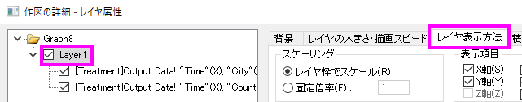

FAQ-441 出版社から指定されたサイズおよび解像度でグラフをエクスポートするにはどうしたらよいでしょうか?
Set-ExpGraph-Size-Resolution
最終更新：2019/01/08
グラフを科学または工学の出版物に含めるためのイメージファイルとしてエクスポートする場合は、次の点を考慮してください。
出版社が要求している設定を調べる人気のあるジャーナルを参照すると、幅広い要求が明らかになります。多くの人は、最初の提出のためにMS Word文書に埋め込まれた画像を見ることを好む一方、出版においてはほとんどの場合、別々の画像ファイルが要求されます。そのため、ジャーナルで受け入れ可能なエクスポート形式とサイズを判断する必要があります。
- ラスターイメージ（TIFF、JPEGなど）を送信する場合は、ジャーナルのサイズと解像度/ DPIの要件を知っている必要があります。
- ベクトル画像（例えば、PDF、EPS）では、ベクトル画像が無限に再スケール可能なので、画像寸法とDPIはそれほど重要ではありません。
- 多くのジャーナルには、図形の内部のテキストに固有の要件があるため、フォントとフォントサイズの要件を確認してください。
- いくつかのジャーナルは最小線の太さを指定するので、軸、注釈などの線の重みをチェックします。
画像フォーマット、画像の寸法と解像度、フォントと線の重さの要件などを決定したら、公開用にグラフを作成する際にこの一般的な概要に従うことをお勧めします。
- スケールファクタの修正：グラフレイヤは、関連する凡例オブジェクト、テキストオブジェクトなどとともに、一連の軸と1つまたは複数のプロットからなる自己完結型の単位です。（a）レイヤ枠のハンドルのサイズ変更をドラッグする、または（b）作図の詳細でレイヤの寸法を変更することによって、グラフレイヤのサイズを変更すると、軸タイトル、目盛ラベル、凡例およびテキストオブジェクトのサイズを比例して変更できます。
- 
この時点では、選択したラベルにカーソルを置かない限り、テキストラベルのサイズはわかりません。次の図は、フォントのサイズ変更の影響を示しています。左のグラフは3つの同様のプロットと統合され、右の4つのパネルグラフが作成されました。この操作中、テキストオブジェクトは比例してスケーリングされました。元のグラフの左側のX軸のタイトルは実際のフォントサイズ22を示し、右側の統合グラフの同じ軸のタイトルは、統合および再スケール後の実際のフォントサイズが10.1になったことを示しています。

フォントサイズの不一致は、テキストラベルを作成するときにも発生し、書式ツールバーのフォントサイズリストを使用して、テキストラベルの選択部分のサイズを変更します。線の重みもスケーリングの影響を受けます。いくつかのジャーナルでは最小線の太さを図で指定しているので、注意を払う必要があります。フォントサイズと線幅の不一致を処理する方法は、グラフをアクティブにして、グラフ操作：固定倍率を選択し、1 (1を選択すると歪みを最小にし、一般的に最良の結果を得ます）を選択します。これにより、フォントサイズと行の重みがリセットされ、書式とスタイルツールバーのフォントサイズおよび線/境界の太さリストで正しく表示されます。
- ページサイズを指定する：
ここでは、ジャーナルに必要な幅の寸法を取り、作図の詳細の印刷・ページサイズタブのサイズグループ設定を使用してグラフページサイズを設定します(フォーマット: ページ)。.幅と高さを個別に設定することも、幅を設定して縦横比を維持チェックボックス使用することもできます。
- フォントサイズを調整する： ステップ1でフォントサイズをリセットした後、必要に応じてグラフのフォントサイズを変更して、ジャーナルの最小フォントサイズ要件および最大フォントサイズ要件に準拠させることができます。 また、フォントの必要条件（セリフ体とサンセリフ体など）を確認することも忘れないでください。
- レイヤをページに合わせる：ステップ2では、対象グラフのページサイズを設定しますが、グラフの周りの空白を削除する必要があります。グラフウィンドウをアクティブにして、ページにレイヤを合わせるを選択します。ダイアログが開いたら、境界幅 （5％が適切な開始点）を入力し、必要に応じてレイヤアスペクト比を維持チェックボックスをオンにします。
- 100％ページサイズでエクスポート：グラフをアクティブにして、ファイル：グラフエクスポートを選択しグラフエクスポートダイアログボックスを開きます。
- 画像の種類を選びます。
- エクスポート設定ノードで、余白の制御をページに設定します。
- 画像サイズノードで、サイズの指定をページの縦横比にし、デフォルト設定の100%にします。
- ラスターイメージタイプを選択した場合は、対象のDPI解像度を設定します。
- 必要に応じてモノクロ、グレースケールまたはカラーを選択します。
設定が完了したらプレビューをクリックし、次にOKをクリックしてグラフをエクスポートします。
 | Origin 2018bには、複数パネルグラフのカスタマイズを高速化するための共通ディスプレイ 設定が追加されています。
|
キーワード:ジャーナル、幅、高さ、DPI、ディスク、PDF、EPS、JPEG、TIFF、大、ファイル、600,1200、レイヤをページに合わせる、固定倍率、ラスター、ベクトル、アスペクト比